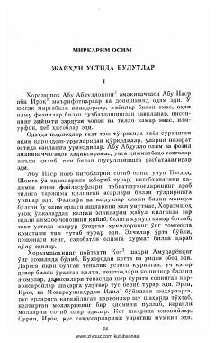

JUBuyuk olim Abu Rayhon Beruniyning yoshlik yillari va ilm yo'lidagi ilk qadamlari haqida hikoya.
Asar buyuk olim Abu Rayhon Beruniyning yoshlik yillari va uning ilm yo'lidagi dastlabki qadamlari haqida hikoya qiladi. Unda Xorazmshohlar davridagi ilm-fan muhiti, olimlarning yosh iqtidor egalariga ko'rsatgan g'amxo'rligi va Beruniyning o'tkir zehni tasvirlangan.